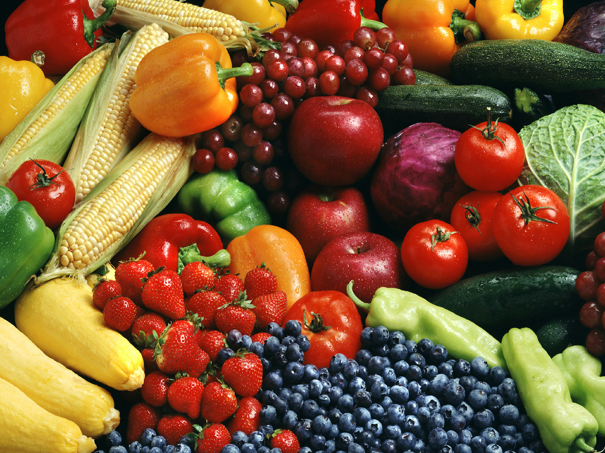

1. Shop smart and REALISTIC.

2. When cooking, don't OVER-serxve food.

3. Store food in the RIGHT places.

4. Keep track of what you THROW away.

1. Shop smart and REALISTIC. |
|
2. When cooking, don't OVER-serxve food. |
|
3. Store food in the RIGHT places. |
|
4. Keep track of what you THROW away. |
|

The following QR code is a donate system. If you care about food waste problem, please donate a small proportion of your asset to the author. Your money will be used to devote to people who are still in hunger!
All Content Copyright © 2020, Aaron Li